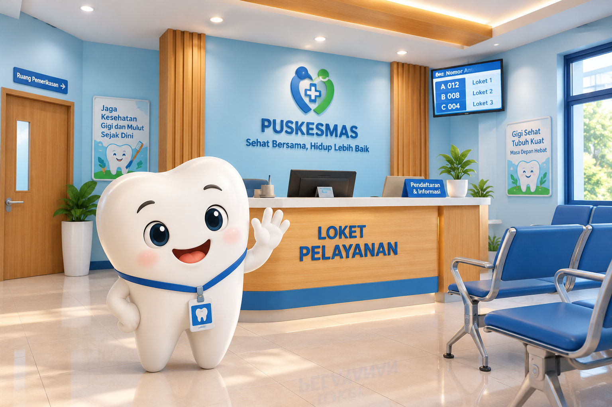
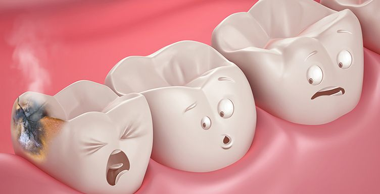

Informasi praktis untuk membantu memahami dan menjaga kesehatan gigi. Temukan panduan tentang kebiasaan, nutrisi, dan pertumbuhan gigi.

Panduan menyikat gigi dengan teknik yang tepat dan teratur untuk menjaga kebersihan gigi dan mulut.
Informasi mengenai pola makan dan asupan nutrisi yang baik untuk membantu menjaga kesehatan gigi dan mulut.
Informasi mengenai proses pertumbuhan dan munculnya gigi serta hal-hal yang perlu diperhatikan selama proses tersebut.
Perpustakaan Kecil Kami
Materi disusun secara ringkas dan informatif untuk membantu menyampaikan informasi kesehatan gigi dan mulut dengan bahasa yang sederhana, relevan, dan mudah dipahami.
Poster informatif yang menyajikan langkah sederhana dalam menjaga kesehatan gigi dan mulut. Pilih poster untuk melihat informasi secara lebih jelas dan temukan kebiasaan baik yang dapat diterapkan sehari-hari.

01 / POSTER
Perbesar

02 / POSTER
Perbesar

03 / POSTER
Perbesar

04 / POSTER
Perbesar
Teman Menonton
Pilih video sesuai usia dan kebutuhan.

Video panduan singkat yang menunjukkan alur pelayanan poli gigi di Puskesmas Siabu, mulai dari pendaftaran hingga perawatan.
Putar video
Video penjelasan visual yang menarik tentang penyebab gigi berlubang (karies), proses kerusakannya, dampaknya, serta cara mencegahnya.
Putar videoVideo edukasi singkat yang mengingatkan pentingnya memeriksakan gigi ke dokter gigi secara rutin setiap 6 bulan sekali.
Putar videoAjak pasien memegang sikat, lalu ikuti empat bagian sederhana ini. Tidak perlu terburu-buru.
SEDANG DILAKUKAN
Pertanyaan kecil ini bisa membuka obrolan besar bersama pasien.
PERTANYAAN 01
SIMPAN UNTUK BERJAGA-JAGA
Ini pertolongan sementara, bukan pengganti pemeriksaan tenaga kesehatan.
Kumur air bersih dan sikat perlahan agar sisa makanan terangkat.
Kompres dingin dari luar pipi. Jangan menempelkan obat langsung ke gigi.
Hubungi puskesmas, terutama bila bengkak, demam, atau sakit tidak mereda.